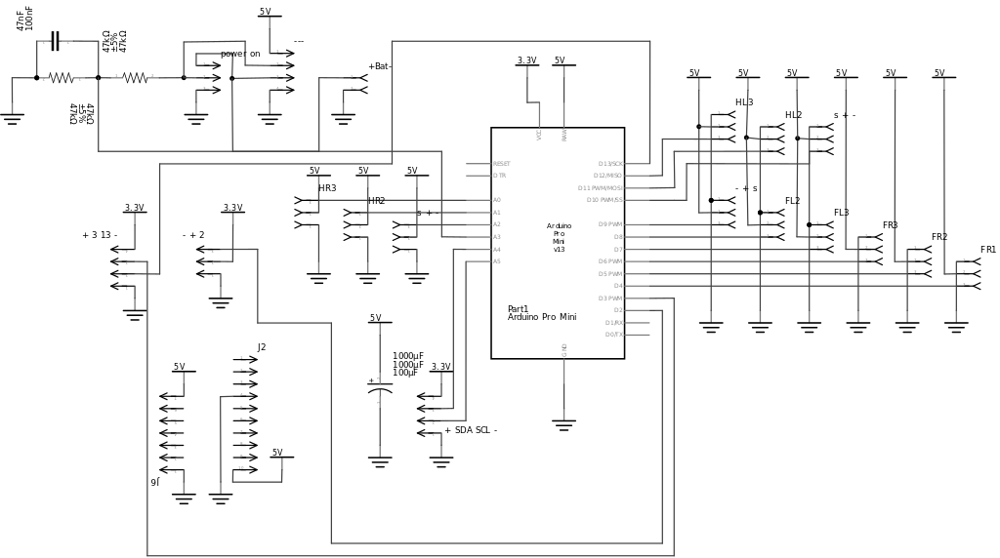
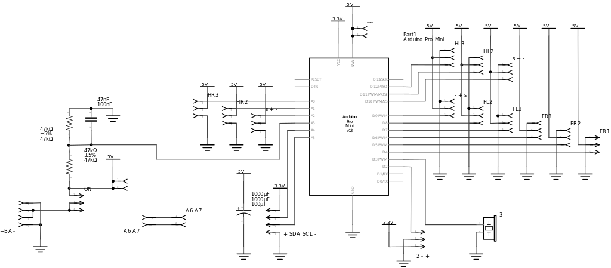

Schematics¶
Published on 2015-06-30 in Tote.
I’ve been asked to provide schematics of the PCB. I must admit, that I neglected that part a little, mostly doing all modifications and connections directly in the PCB view, but now I cleaned up the schematic view a little better.
Here’s the schematic for PCB2 (the ones I’ve been giving out and which you can order from dirtypcbs):

And here is the reworked PCB3, which will be available soon (I need to order and test it first):

As you can see, there isn’t really much to it, it’s mostly connections for all the servos and the small voltage divider for battery monitoring.